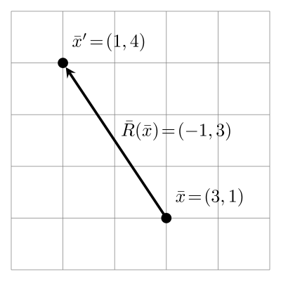
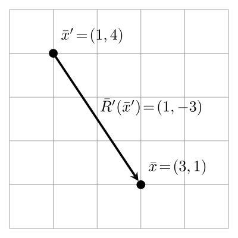
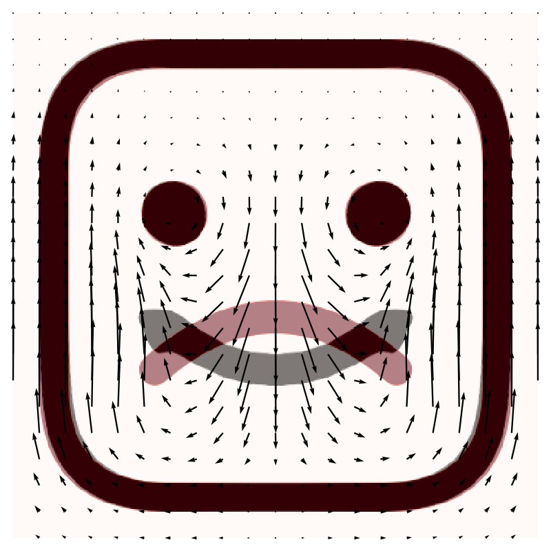
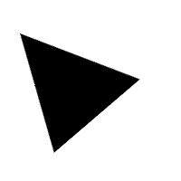
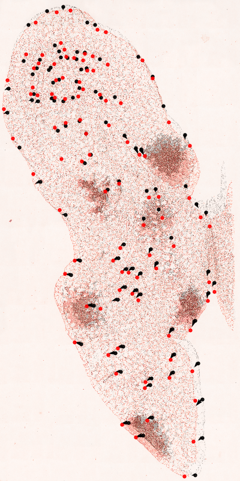

pFIRE Tutorial¶
This tutorial is designed to provide a hands-on walkthrough of the capabilities of pFIRE. We will begin with an example that uses the default configuration of pFIRE. After this we will look at some of the more advanced options that allow us to control both how pFIRE performs its registration, and the output formats that can be written.
All the tutorial files can be found on the pFIRE Github, or may be downloaded in a
zip archive.
In order to perform registration, pFIRE requires a pair of images: a reference image, and a second
image that is deformed until it is the same as the reference image. These are referred to as the
fixed and moved images respectively. These are set in the configuration file using the
keys fixed and moved.
When performing the registration the applied deformation field is initially very coarse grained,
with just 3 grid nodes per dimension. This is repeatedly refined to increase the number of nodes
in the registration until the required resolution is reached. This is expressed in the
configuration file using the parameter nodespacing, which gives the spacing between nodes in
image pixels.
The pFIRE Configuration File¶
pFIRE is run from the command line, with all the configuration options set in a configuration file.
This file uses .ini syntax, with key = value pairs.
Minimum Requirements¶
The minimum information pFIRE requires to perform a registration is a fixed image, a moved image,
and a target nodespacing. If the parameters fixed, moved and nodespacing are not set in
the configuration file, pFIRE will abort with an error. The two images must have the same
dimensions in order to perform registration. Supported image formats include typical 2D formats
such as .png, .jpeg or .tiff (see the OpenImageIO documentation for a full list), as
well as 2D and 3D dicom files.
A minimal configuration file will look like this:
fixed = path/to/fixed.img
moved = path/to/moved.img
nodespacing = 10
Output Files¶
pFIRE produces a pair of output files: the registered image, and the corresponding displacement map. The registered image is generated by warping the moved image using the final displacement map. In the ideal case this will be identical to the fixed image. In practical usage, the registered image may be compared with the fixed image to determine the quality of the registration.
The filename and format of the registered image may be chosen using the registered =
configuration parameter. By default the image is be saved with the filename registered =
registered.xdmf. This produces an XDMF metadata file and an HDF5 binary data file which may be
plotted with ParaView, VisIt or similar scientific viewer software. Alternatively, for 2D
images, an image extension such as .png or .jpeg, may be specified, and the image will be
output in this format (as with image reading, see the OpenImageIO documentation for a full list).
The output path for the map may also be specified using the map = parameter. At the current time, the only
available output format is HDF5, either with or without the XDMF metatdata file. If the map
filename ends with .xdmf both files will be created, if it ends with .h5 only the binary
data will be stored.
As an example, the minimal configuration above can be extended to output the image to
myimage.png and the map to mymap.xdmf with:
fixed = path/to/fixed.img
moved = path/to/moved.img
nodespacing = 10
registered = myimage.png
map = mymap.xdmf
An HDF5 file can contain many datasets, similar to the way a filesystem can can
contain many files with different names. In HDF5, directories are called groups and may contain
any number of uniquely named datasets. It is therefore possible to place the registered image data
and map data in the same file. The name of the group that the dataset should be placed in can be
chosen with the syntax path/to/file:/path/to/dataset. Note that while the image is a single dataset,
the map is made up of multiple datasets and only the group name can be set. (For more information
see The HDF5/XDMF Map Format)
The below example would cause the image and map data to both be placed in results.xdmf.h5, with
the image data in a dataset named registered_image and the map datasets in a group called
registration_map:
fixed = path/to/fixed.img
moved = path/to/moved.img
nodespacing = 10
registered = results.xdmf:/registered_image
map = results.xdmf:/registration_map/
Registration Example: Cartoon Faces¶
This example is located in the faces_1 directory, here you will find the files happy.png,
sad.png and sad2happy_default.conf. If you open sad2happy_default.conf in an editor
you will find the following:
fixed = happy.png
moved = sad.png
nodespacing = 20
registered = sad2happy_default.png
map = sad2happy_default.xdmf
This instructs pFIRE to register the image in sad.png to the image in happy.png using a
final nodespacing of 10. The registered parameter instructs pFIRE to store the registered
image in the file sad2happy_default.png.
happy.png |
sad.png |
This example can be run with:
user@machine $ pfire sad2happy_default.conf
or using MPI with X tasks:
user@machine % mpirun -np X sad2happy_default.conf
This will produce a pair of output files: sad2happy_default.png and map.xdmf. We will look
at the map output later in the tutorial. For now, viewing sad2happy_default.png shows the
results of the registration, with happy.png for comparison:
sad2happy_default.png |
happy.png |
If the registration was perfect sad2happy_default.png would be identical to happy.png, however, we
can see that there a still differences: the mouth is somewhat distorted, and there are changes to
the eyes in the registered image even though they are identical in both the source images. This is
a result of the smoothing behaviour of pFIRE, which tries to ensure that the calculated
displacement is globally smooth. This is typically the desired behaviour, but in certain situations
the default smoothing behaviour is non-optimal for the problem at hand. To help with this, pFIRE
offers several configuration parameters to help control the smoothing behaviour.
Customizing the Registration¶
pFIRE has two key parameters that allow the user to optimize the registration, these are the value of the smoothing parameter \(\lambda\), and whether or not the memory term is used in the registration. Both of these parameters have an effect on how smooth the displacement field is.
The Smoothing Parameter \(\lambda\)¶
The registration equation includes a smoothing constraint through the laplacian matrix, which imposes a requirement for smoothness on the solution to the equation, and therefore on the displacement field. The value of the parameter \(\lambda\) determines the relative strength of the smoothing constraint relative to the registration constraint.
By default the value of \(\lambda\) is automatically calculated such that the condition number of the registration matrix \(\mathbf{T}^t\mathbf{T} + \lambda\mathbf{L}^t\mathbf{L}\) is minimized, however, in certain situations it may be useful to customize the smoothing behaviour.
The value and behaviour of \(\lambda\) can be controlled by two configuration options:
lambda_mult, which allows the user to provide a scaling multiplier for the automatically
determined value of \(\lambda\); and lambda, which allows the user to specify a fixed value
of \(\lambda\).
The lambda parameter¶
The default value of the lambda parameter is auto, if a value of lambda is not
specified in the configuration file then it defaults to this value. If lambda = auto then the
value of lambda is calculated to minimize the condition number of the matrix
\(\mathbf{T}^t\mathbf{T} + \lambda\mathbf{L}^t\mathbf{L}\) as this maximises the robustness of
the algorithm.
An example configuration file for running pFIRE with a fixed value of \(\lambda\) is provided
in the file faces_1/sad2happy_fixed_lambda.conf.
fixed = happy.png
moved = sad.png
nodespacing = 20
lambda = 10
registered = sad2happy_fixed_lambda.png
This will register the same images as above, but with a large fixed lambda = 10.
sad2happy_fixed_lambda.png |
happy.png |
Setting lambda = 10 in this way causes the algorithm to always give the smoothing 10 times the
weight of the registration when solving for the displacement field, and so in this case oversmooths
the image resulting in a poor registration. Additionally, fixing lambda in this way potentially
causes the registration matrix to be ill-conditioned and so can cause the solver to be unstable.
This functionality is included as it is sometimes appropriate for advanced users, however its use
in not generally recommended. If the results are over- or under-smoothed, the lambda_mult
parameter can be used to make relative adjustments to the smoothing.
The lambda_mult parameter¶
The lambda_mult parameter is intended to be used in conjunction with lambda = auto to
allow the amount of smoothing to be adjusted relative to the calculated optimum. This allows the
user some control of the amount of smoothing whilst retaining reasonable stability of the
registration algorithm.
In the first example above we saw that the mouth was not precisely registered because the image is
smoothed too strongly, therefore we might wish to try reducing the smoothing by setting the
parameter lambda_mult = 0.5.
An example configuration file for this is provided in faces_1/sad2happy_relative_lambda.conf:
fixed = happy.png
moved = sad.png
nodespacing = 20
lambda_mult = 0.5
registered = sad2happy_relative_lambda.png
This registers the same images once again, but reducing the smoothing by a factor of 0.5:
sad2happy_relative_lambda.png |
happy.png |
This results in a registration that is very similar to the first, the registration of the details of the mouth is improved, but there are still issues with the rest of the image. This is a problem with the way the image is smoothed, and cannot be solved by simply changing the smoothing strength; instead we must change the fundamental smoothing behaviour.
The Memory Term¶
The registration algorithm implemented by pFIRE is an iterative one which applies the same equation
repeatedly to incrementally improve the displacement field until the registration is complete. The
equation includes an optional extra smoothing term which depends on the total displacement field
calculated so far. This acts to ensure that the displacement field remains globally smooth even
after many iterations, and is enabled by default. For many registration operations this is
desirable behaviour: if the images being registered are related by some kind of global
transformation, for example a stretching, scaling or warping as might be encountered when
registering images of two different organs, or growth of a structure over time. In other cases
this may lead to a poorer registration, particularly if there are localised deformations in the
image pair, examples of such situations might include determining the relative motion of two
structures, or identifying small localised changes over a large image. The memory term is
controlled by the with_memory parameter and defaults to with_memory = true.
The cartoon faces we have used for demonstration so far are an excellent example of a situation where there are localised changes: in the registration of the sad face to the happy face the border of the face and the eyes are unchanged between the two images and only the mouth changes. In all the registration examples so far the global smoothing has caused distortion of these static structures as well as limiting the accuracy of registration of the mouth area.
The file faces_1/sad2happy_no_memory.conf disables the memory term and hence the global
smoothing:
fixed = happy.png
moved = sad.png
nodespacing = 20
with_memory = false
registered = sad2happy_no_memory.png
Running the registration with these parameters produces the following result:
sad2happy_no_memory.png |
happy.png |
With the global smoothing term disabled the quality of the registration is vastly improved. The mouth is cleanly registered with much smaller error, and the border of the face, along with the eyes remain static through the registration.
The with memory parameter provides control over the global smoothing of the displacement
field. The appropriateness of the global smoothing is problem specific, and for more unusual
problems some experimentation may be required to find the optimal smoothing behaviour.
Visualising the Result¶
The primary purpose of outputting the registered image is to compare it with the fixed image to determine the quality of the registration. This can be done in many ways, a common approach being to simply overlay the two images and visually determine how well the registration has performed.
An example script called overlay_images.py is provided with pFIRE to demonstrate this for 2D
images. It takes a pair of input images, and overlays them to show how closely they are aligned:
$ overlay_images.py --help
usage: overlay_images.py [-h] [--flip] fixed moved output
Overlay images with transparency
positional arguments:
fixed Path to fixed image
moved Path to moved image
output Path to save output png.
optional arguments:
-h, --help show this help message and exit
--flip Flip image vertically (origin top-left)
For example, overlaying the results of the first registration we performed above,
$ cd tutorial_files/faces_1
$ overlay_images.py happy.png sad2happy_default.png comparison.png --flip
/usr/lib64/python3.6/site-packages/skimage/io/_io.py:49: UserWarning: `as_grey` has been deprecated in favor of `as_gray`
warn('`as_grey` has been deprecated in favor of `as_gray`')
produces the following result:
The fixed image is shown in grey, and the moved image in red, with the composite dark red areas showing where the images are overlaid.
Unregisterable Images¶
It is important to realise that there are a large class of image pairs for which pFIRE cannot provide a satisfactory registration. In order for two images to be registerable they must have all the same features (topologically speaking they must be homotopic) such that one can be continuously deformed into the other.
As a practical example consider the pair of images we registered in the example above. There, the sad face can be registered into the happy face by displacing the sides of the mouth upwards and a smooth displacement field can be used to do this.
In comparison, consider the two images below:
grin.png |
sad.png |
In this case the grinning face does not have the same features as the sad face. In order to distort the sad face into the grinning face the pixels of the mouth would have to be simultaneously displaced upwards to form the top of the grinning mouth, and downwards to form the bottom of it. Since the displacement field must be single valued this is not possible, and so the images cannot be registered.
These images are located in the faces_2 example folder. A sample registration configuration is
provided in sad2grin.conf. Performing the registration should result in:
sad2grin.png |
grin.png |
As you can see: pFIRE will always produce a result. It is entirely up to the user to determine if two images are suitable to be registered, and to check the results are sane!
The Displacement Map¶
The primary output of pFIRE is the displacement map. This is a 2-D or 3-D vector field describing how the moved image is related to the fixed image. Specifically, pFIRE outputs a map which for a given point in the fixed image, describes the location in the moved image that this point corresponds to. This can be expressed as
where \(f(\bar{x})\) and \(m(\bar{x})\) are the intensity values at the point \(\bar{x}\) of the fixed and moved images respectively, and \(\bar{R}(\bar{x})\) is the displacement field at that point. The displacement field is calculated on a regular grid by pFIRE, with values between grid nodes found by linear interpolation.
Applying the Map¶
The output map is also the form of the mapping used internally in pFIRE to transform the moved image to the fixed image: Each pixel in the fixed image is mapped to a location in the moved image. The moved image is then sampled to determine the value of the pixel in the fixed image. The sampling point may not be exactly located in the centre of a pixel, in which case linear interpolation is used to sample the four nearest pixels to the sample point. This can be considered as “pulling” the moved image to line up with the fixed image.
Often, however, we will in fact want to “push” something that we know the coordinates of the in fixed image, in order to determine its location in the moved image. This might be the location of manually determined landmark, or another image. For example, in the case of segmentation by registration the moved image is registered to a fixed image which is already segmented. This segmentation information may then be mapped back to the moved image by displacing the segmentated volumes using the displacement field.
Specific examples of using the map in this way are demonstrated later in this tutorial.
Reversing the Mapping¶
It is often desirable to invert the mapping. This allows objects with known coordinates in the moved image to be “pushed” to their corresponding location in the fixed image, or to be “pulled” from the fixed image to the moved image.
The mapping is given by the displacement field, where for a point \(\bar{x}\) in the fixed image, the corresponding point in the moved image \(\bar{x}'\) is given by
and since mapping goes both ways, we can also write the location of \(\bar{x}\) in terms of \(\bar{x}'\) using the reverse mapping \(\bar{R}'(\bar{x}')\) as
Equating these two expressions we find that
This means we can get the reverse mapping by simply reversing the direction of the displacement field, but we must also remember to move the nodes. The locations of the nodes for the reverse mapping are found by pushing the nodes from the forward mapping from the fixed image to the moved image.
This relationship is demonstrated graphically below:
|  |  |
| Foward Mapping | Reverse Mapping |
{kind=link}
{kind=link}
If the inverse mapping field is needed at the original node coordinates this can be found by interpolating the reverse mapping at the desired points.
The HDF5/XDMF Map Format¶
The primary output format that pFIRE uses for displacement maps is an HDF5 file, with XDMF metatdata file, both of which are well known and standardised formats. The HDF5 file is a binary format which contains the map as arrays of displacement field values and node locations. The XDMF file is a small metadata file which describes the layout of the data within the HDF5 file, and is intended to be consumed by visualisation programs such as ParaView or VisIt.
HDF5 Data Layout¶
A HDF5 file may contain multiple datasets organised into groups, similar to the way that files may
be organised into folders in a computer filesystem. For pFIRE map data, the map data is stored in
4 or 6 datasets, depending on the dimensionality of the image. These datasets will be stored in a
group, the name of which can be chosen by the user in the configuration file (the default is
/map).
The displacement field data itself is stored in 2 or 3 2D or 3D array datasets, one per spatial
component, named x, y, and, if the problem is 3D, z. The node location data is stored in 2
or 3 1D array datasets, named nodes_x, nodes_y, and nodes_z, listing the node locations along
each axis. For example, with the default group naming of map, a 2D dimensional problem with a
\(13\times 11\) displacement field, would result in an HDF5 file with the following structure:
/ Group
/map Group
/map/nodes_x Dataset {13}
/map/nodes_y Dataset {11}
/map/x Dataset {13, 11}
/map/y Dataset {13, 11}
This HDF5 file may be opened and used by and program or library which supports it. However, for simply viewing the map, the supplied XDMF metadata file makes it straightforward to view the map using standard visualisation software such as Paraview.
Visualising The Map¶
Visualisation of the map can be performed in multiple ways using either existing visualisation software, or by writing custom analysis and plotting routines. This tutorial includes a simple demonstration of both of these methods.
The mapplot2d script¶
A small python script called mapplot2d.py is supplied with pFIRE. It is intended to be both a
simple viewer tool for 2D problems and as a teaching aid to demonstrate working with the map data
in Python. The script takes four arguments:
$ mapplot2d.py --help
usage: mapplot2d.py [-h] [--group GROUP] [--flip] [--invert-map]
registered moved map output
Show registered images with map data overlaid.
positional arguments:
registered Path to registered image
moved Path to moved image
map Path to map file
output Path to save output png.
optional arguments:
-h, --help show this help message and exit
--group GROUP Group name of map.
--flip Flip image vertically (origin top-left)
--invert-map Invert mapping before plotting
| fixed: | The path to the fixed image. |
|---|---|
| moved: | The path to the moved image. |
| map: | The path to the map hdf5 file. |
| output: | Path to output the resulting image (png) |
| –group: | Specify the group name of the map in HDF5 file (default “map”) |
| –flip: | Flip image vertically (puts origin in the upper left) |
| –invert-map: | Invert the mapping to show direction of motion from moved to fixed image. |
For example, to render the results of the first sample problem in faces_1/sad2happy_default.png,
navigate to that folder and run
$ cd tutorial_files/faces_1
$ mapplot2d.py --flip --invert-map sad2happy_default.png sad.png sad2happy_default.xdmf.h5 sad2happy_map_render.png
/usr/lib64/python3.6/site-packages/skimage/io/_io.py:49: UserWarning: `as_grey` has been deprecated in favor of `as_gray`
warn('`as_grey` has been deprecated in favor of `as_gray`')
/home/telemin/repos/pfire/reglab/mapplot2d.py:44: FutureWarning: arrays to stack must be passed as a "sequence" type such as list or tuple. Support for non-sequence iterables such as generators is deprecated as of NumPy 1.16 and will raise an error in the future.
method="cubic") for rv in rev_vecs)
which results in:
|  |
sad2happy_map_render.png |
The resulting image shows the moved image in red, and the registered image in grey, with the map vector field overlaid. In this case the map is inverted to show the direction of motion of the pixels between the moved and fixed images.
ParaView¶
To visualise the map using ParaView, open the XDMF file produced by pFIRE. This will instruct ParaView how to interpret the accompanying HDF5 file. After opening the file using the file->open dialog, the dataset will appear in the list on the left hand pane of the screen. Clicking apply will cause ParaView to render the map data. Now the data is loaded, the mapping can be visualised using glyphs. The glyph filter can be applied by selecting filters->common->glyph from the menu bar, and again clicking apply in the left hand pane.
Intermediate Frames¶
pFIRE is capable of outputting all intermediate image frames in the registration. This is primarily intended as a debugging feature but can be instructive in understanding how the elastic registration process proceeds.
The creation of intermediate frames is controlled by the save_intermediate_frames parameter.
Setting this to save_intermediate_frames = true will cause pFIRE to output all intermediate
frames. By default these will be in the same format as requested for the registered image and be
collected in a subdirectory named intermediates, placed in the same directory as the registered
image.
Controlling The Output¶
The naming, format and location of the intermediate frames may be controlled by two parameters,
intermediate_template allows control of the file format and filename, and
intermediate_directory allows naming of the subdirectory in which the frames are saved.
The intermediate_directory Parameter¶
The intermediate_directory parameter sets the path to the directory where the intermediate
frames will be stored. If this is a relative path, it is set relative to the location of the
registered image and the directory will be created if necessary. If it is an absolute path then
the directory must already exist. The default value is intermediate_directory = intermediates
which will cause the images to be collected in subdirectory named intermediates, placed in the
same directory as the registered image.
The intermediate_template Parameter¶
By default intermediate_template has the value intermediate_template =
%name%-intermediate-%s%-%i%.%ext%, where the tokens surrounded by % characters will be
replaced before output. This allows customization of the output file name using elements of the
registered filename as well as the step and iteration number:
%name%: | This will be replaced with the name of the registered image without the extension. For
example, if the configuration file contains |
|---|---|
%ext%: | This will be replaced with the file extension of the registered image. For example, if
the configuration file contains Using this allows the format of the intermediate frames to be automatically matched to
the registered image. Alternatively it can be set as a different format by using the
extension string directly instead of the |
%s%: | This will be replaced with the algorithm step number. Step number 0 corresponds to the coarsest nodespacing and increments by one each time the nodespacing is refined. |
%i%: | This will be replaced by the iteration number. This is reset to zero every time the nodespacing is refined. |
Intermediate Frames Example¶
An example for outputting the intermediate frames, with custom parameters is given in the
intermediate_frames directory of the tutorial examples.
The configuration file is named intermediate_frames/custom_intermediates.conf:
fixed = fixed_triangle.png
moved = moved_triangle.png
nodespacing = 20
with_memory = false
save_intermediate_frames = true
intermediate_template = intermediates-%s%-%i%.jpeg
intermediate_directory = intermediate_frames
registered = registered_triangle.png
In this case, the intermediate frames will be saved to the intermediate_frames folder and be
named intermediates-00-000.jpeg. Note that using this template format pFIRE has been instructed
to output the intermediate frames as jpeg images even though the registered image is output in png
format.
This results in an image series like the following (animated gif):
|  |
{kind=link}
Application Examples¶
This section highlights some of the applications for elastic registration. Providing hands-on examples with additional exemplar code to demonstrate the pre- or post-processing steps involved in the application.
Please note that this additional code is designed purely for teaching purposes and has not been tested or verified in any way for use in any other context.
Multimodal Image Alignment¶
A common application for image registration is the correct alignment of multiple images of the same sample, taken via different modalities. For example the alignment of CT and MRI scans of the same organ, or the alignment of multiple histological samples. This latter case is what we use for this example. Alignment of such histological samples is particularly difficult due to non-linear distortion introduced into the sample during the preparation process.
The tutorial folders lung_lesions and lung_lobes contain sets of 2D histological microscopy
tissue slices, stained with a variety of different stains. Along with the images, the dataset also
includes a set of manually identified tissue landmarks. These are located on the same structures
in each sample and can be used to validate the registration of the image. This dataset is made
available under a creative commons license (CC-BY-SA) by Jiří Borovec (see below).
The typical use case for image registration with datasets such as this is to choose one image as the fixed image and register all the other images to that image. This produces a new dataset comprised of a set of aligned images for direct comparison of the same tissue location with various different stains.
An example registration configuration is provided in each directory, these should be copied and modified to optimise the registration of the various images.
An additional demonstration analysis script plot_annotations.py is provided to demonstrate how
the manually identified landmarks can be used to determine the goodness of the registration.
$ plot_annotations.py --help
usage: plot_annotations.py [-h] [--map_group MAP_GROUP]
fixed_img fixed_annot moved_img moved_annot map
output
Plot annotated histology slides with map displacements
positional arguments:
fixed_img Fixed image
fixed_annot Fixed image annotation csv
moved_img Moved image
moved_annot Moved image annotation csv
map pFIRE Map Output
output Output image
optional arguments:
-h, --help show this help message and exit
--map_group MAP_GROUP
Map hdf5 group
Running this results in an image like the following:
|  |
{kind=link}
The script plots the fixed (black) and moved (red) images along with the annotated landmarks and shows the displacement that would be applied to each node in the moved image if warped using the pFIRE map. If the registration is correct each red node should be linked directly to a black node by a displacement vector. In this case the registration is poor and the displacment field does not correctly map all the nodes. Optimisation of registration parameters will likely improve the quality, but this is an exercise left to the dedicated reader.
Dataset Information¶
This dataset [1] was curated by Jiří Borovec, Center for Machine Perception, Department of Cybernetics, Faculty of Electrical Engineering, Czech Technical University in Prague, from images provided by Prof. Arrate Munoz-Barrutia, Center for Applied Medical Research (CIMA), University of Navarra, Pamplona Spain [2]; and Prof. Ortiz de Solórzano, Center for Applied Medical Research (CIMA), University of Navarra, Pamplona Spain [3].
Further Reading¶
For further information on the algorithm implemented by pFIRE, the original papers describing the algorithm are Barber and Hose 2005 [4] and Barber et al. 2007 [5].
| [1] | J. Borovec, A. Munoz-Barrutia, and J. Kybic, “Benchmarking of Image Registration Methods for Differently Stained Histological Slides,” IEEE International Conference on Image Processing (ICIP), 2018, pp. 3368–3372, DOI: 10.1109/icip.2018.8451040. |
| [2] | J. Borovec, J. Kybic, M. Bušta, C. Ortiz-de-Solorzano, and A. Munoz-Barrutia, “Registration of multiple stained histological sections,” in IEEE International Symposium on Biomedical Imaging (ISBI), 2013, pp. 1034–1037, DOI: 10.1109/ISBI.2013.6556654. |
| [3] | R. Fernandez-Gonzalez et al., “System for combined three-dimensional morphological and molecular analysis of thick tissue specimens,” Microsc. Res. Tech., vol. 59, no. 6, pp. 522–530, 2002, DOI: 10.1002/jemt.10233. |
| [4] | Barber D, Hose D., “Automatic segmentation of medical images using image registration: diagnostic and simulation applications,” Journal of medical engineering & technology, 29(2), 2005, pp. 53-63, DOI:10.1080/03091900412331289889. |
| [5] | Barber DC, Oubel E, Frangi AF, Hose D., “Efficient computational fluid dynamics mesh generation by image registration,” Medical image analysis, 11(6), 2007, pp. 648–662, DOI:10.1016/j.media.2007.06.011. |